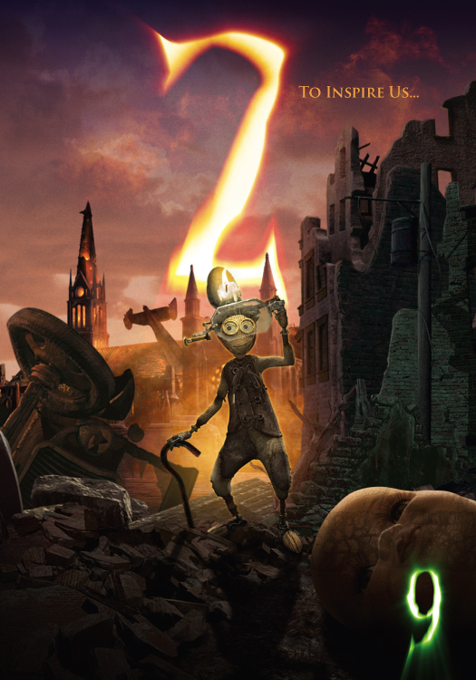
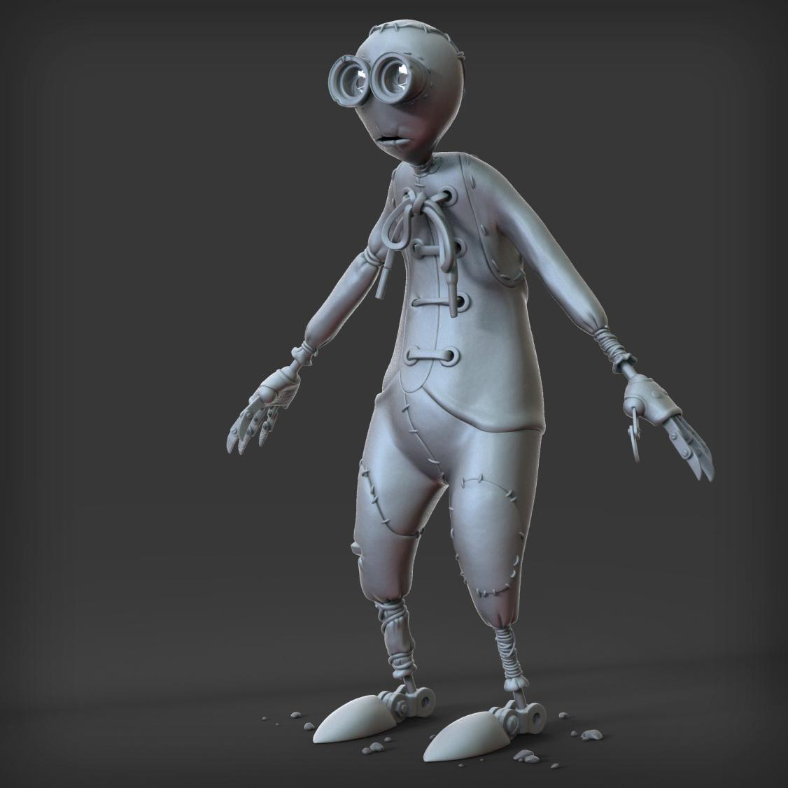
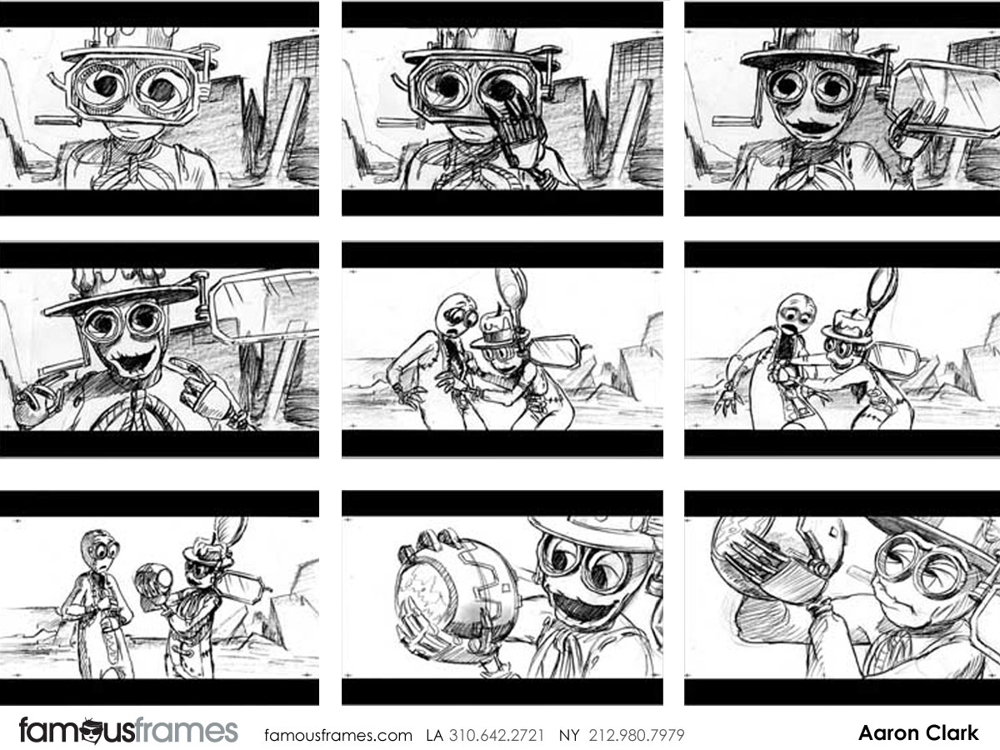

2 is the super friendly, intelligent, and brave old man of the group. Voiced by the late Martin Landau, he is the first one that meets 9.
He is an inventor at heart and is likely responsible for the majority of contraptions the stitchpunks use to navigate their world.
2 is also a mentor to 5. He gets taken away by the awful catbeast, but not without putting up a fight first.
Shane Acker affectionately describes 2 as a "salty old dog." We love 2. And 2 loves everyone.

2 Model (Front) by Martin Coustenoble.

This is an early storyboard of 9 meeting 2 for the first time! His eyes get super huge when fascinated by something.
Martin Landau describes 2's character.